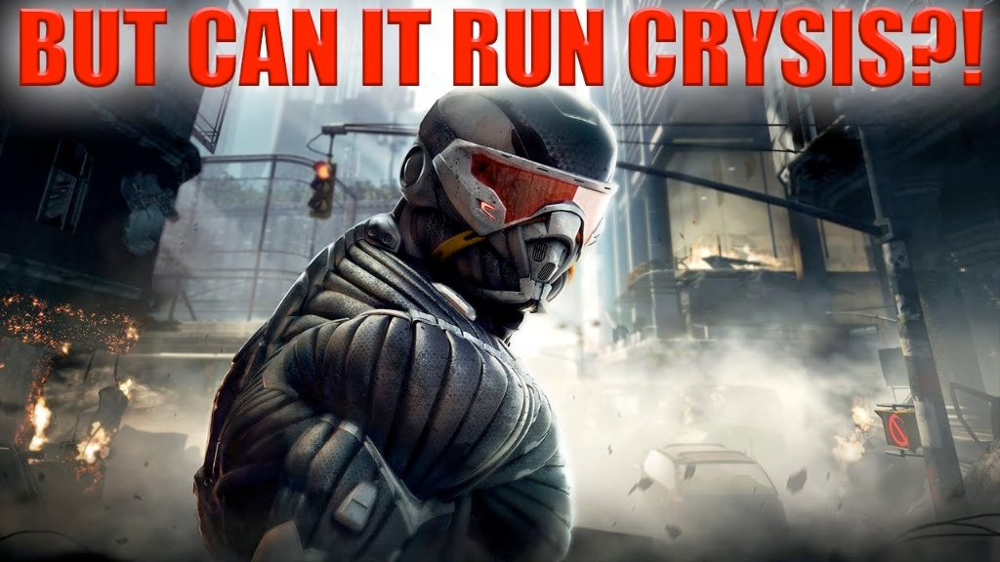
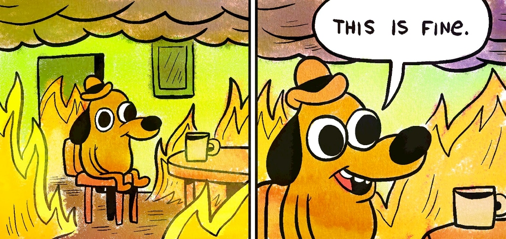

In the technical world of computer hardware and system design, information is not just shared through data sheets; it is transmitted through culture. Patrick Davison defines an Internet meme as "a piece of culture, typically a joke, which gains influence through online transmission." For engineering students, these memes are what Major Michael Prosser calls "bits of cultural information transmitted and replicated throughout a population."
Below are three memes that resonate with the hardware-focused audience of this site.
1. "Can it Run Crysis?"

Relation to Topic
This meme directly targets hardware enthusiasts and engineers obsessed with Moore's Law and peak processing power.
The Ideal (Davison)
The ideal of this meme is the concept that there is always a "final boss" of software that demands better hardware. It dictates a behavior where users constantly benchmark new technology against the most demanding standard.
The Behavior (Know Your Meme)
The behavior involves users asking this question on posts featuring any new chip or even non-computing hardware. It originated with the 2007 release of Crysis, which was famously too demanding for contemporary PCs.
The Manifestation
The manifestation is the external, observable phenomena of the specific text string or a screenshot of a low-FPS benchmark. It differs from other manifestations (like a standard review) because it uses a single, hyperbolic question to judge an entire system's worth.
2. "This is Fine"

Relation to Topic
This meme is the "anthem" for engineers facing cascading system failures or debugging nightmares.
The Ideal (Davison)
The ideal is the concept of stoicism in the face of total failure. It represents the "internal" state of an engineer whose code is literally on fire.
The Behavior (Know Your Meme)
The behavior is the act of constructing or reposting this emoticon-like image to convey emotional meaning to a text thread about a crashed server. It originated from a 2013 webcomic by KC Green.
The Manifestation
The manifestation is a two-panel image of a dog in a burning room. This differs from a simple "error message" because it provides what Davison calls "fidelity of form," preserving the emotional weight of the joke through its specific visual arrangement.
3. "The Nihilist Penguin"
Relation to Topic
This is a high-resonance meme for the 2026 student body at Rutgers, representing the extreme burnout associated with Engineering Statics or Physics exams.
The Ideal (Davison)
The ideal is the concept of total academic abandonment. It is the "metaphysical" urge to turn away from one's "colony" (responsibilities) and walk into the void.
The Behavior (Know Your Meme)
The behavior is the act of syncing a specific 2007 Werner Herzog clip to dramatic music to signal a decision to "quiet quit" an assignment. It has gained influence in 2026 through what Davison calls "distributed" transmission, with thousands of students creating their own iterations.
The Manifestation
The manifestation is a short video loop of a lone penguin walking toward the mountains. It is distinct from other "quitting" memes because its power lies in its biological, almost clinical indifference to survival.
Conclusion: Why Manifestations Matter
These specific manifestations appeal to my target audience because they function as "Info-PIP" — information that propagates, has impact, and persists. In a field like computer engineering, where logic and data are paramount, these memes provide a necessary, "unrestricted" wilderness for creative expression. They allow students to communicate the "nonlinear" struggle of engineering in a way that traditional technical documentation never could.